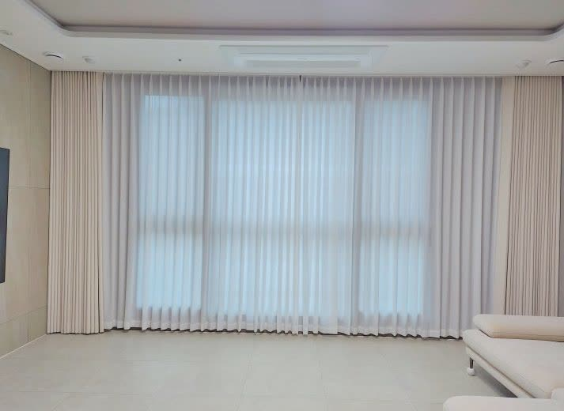

2026년 7월 1일 시공
안동 정하동 아파트
거실 · 안방 베이지 2중커튼 시공후기

안동 정하동 아파트에 다녀왔습니다.
낮에는 눈부심 없이 은은하게, 밤에는 확실하게 가리고 싶다는 요청이었습니다.
가서 보니 그레이와 우드 톤으로 차분하게 꾸민 집이었고, 거실 통창으로 빛이 시원하게 드는 만큼 눈부심과 바깥 시선도 그대로 들어오는 구조였습니다.
햇빛과 시선은 신경 쓰이는데 낮에 집이 어두워지는 건 싫으셨고, 한 겹 커튼으로는 두 가지를 다 만족시키기 어려운 조건이었습니다.
그래서 안쪽에 일반쉬폰 속커튼, 바깥에 베이지 암막 겉커튼을 겹친 2중커튼으로 진행했습니다.
2중커튼이 이 집에 맞았던 이유
2중커튼은 빛을 부드럽게 통과시키는 속커튼과 빛을 막아주는 겉커튼을 한 창에 겹쳐 다는 방식입니다.
낮에는 속커튼만 쳐서 채광을 은은하게 걸러 들이고, 밤이나 잘 때는 겉커튼까지 닫아 확실하게 가립니다.
쉬폰 속커튼은 빛은 통과시키면서도 밖에서 안이 잘 보이지 않게 해줘, 낮 시간 사생활 보호에도 도움이 됩니다.
한 창에서 그날 상황에 맞게 채광과 차광을 골라 쓸 수 있으니, 눈부심은 싫은데 어두운 집도 싫은 분들께 가장 확실한 답입니다.
거실은 풀나비주름으로 풍성하게
거실은 통창 라인이 넓어 풀나비주름으로 풍성하게 잡았습니다.
풀나비주름은 원단을 넉넉하게 써서 주름 산을 깊게 잡는 방식이라, 커튼이 무게감 있게 떨어지고 창 전체가 묵직하게 채워집니다.
주름이 깊게 잡히니 커튼이 고급스럽게 떨어지고, 낮에 속커튼 사이로 드는 빛이 부드럽게 걸러집니다.
거실은 우물천장에 커튼박스가 있어, 그 안으로 레일을 넣어 보이지 않게 정리했습니다.
레일이 감춰지니 커튼이 천장에서 바로 떨어지는 것처럼 보여 천장 라인이 더 살아납니다.
이런 마감 디테일이 같은 커튼도 한층 단정하게 보이게 합니다.

안방은 전망 살리고 차광 겸용으로
안방은 고층이라 전망이 좋은 자리였습니다.
전망은 살리면서 잘 때는 확실히 어둡게 하고 싶으셔서, 여기도 일반쉬폰과 베이지 암막 2중으로 맞췄습니다.
낮에는 속커튼으로 전망과 채광을 즐기고, 잘 때는 암막을 닫아 숙면 환경을 만듭니다.
커튼 하나로 전망 좋은 방과 깜깜한 침실을 오갈 수 있는 셈입니다.

색은 베이지로 맞췄습니다
커튼 색은 그레이·우드 톤 인테리어에 맞춰 베이지로 정했습니다.
베이지는 이런 톤에 부드럽게 스며들면서 공간을 한층 차분하고 고급스럽게 만들어 줍니다.
색이 튀지 않으니 인테리어가 정돈되어 보이고, 나중에 가구나 소품이 바뀌어도 무난하게 받쳐 줍니다.
관리도 어렵지 않습니다
커튼은 평소 창을 열어 환기할 때 가볍게 털어주면 먼지가 쌓이는 걸 줄일 수 있습니다.
쉬폰 속커튼은 오염되면 중성세제로 물세탁이 가능하고, 암막 겉커튼은 원단이 상하지 않도록 강하게 비비는 세탁만 피하시면 오래 쓰실 수 있습니다.
계절이 바뀔 때 한 번씩 손봐주시면 처음 단 것 같은 상태가 오래 유지됩니다.
눈부심과 시선은 막고 싶은데 낮이 어두워지는 게 싫으시다면, 2중커튼이 가장 좋은 답입니다.
안동을 포함한 대구·경북 전 지역, 커튼 교체가 고민되시면 편하게 문의 주세요.